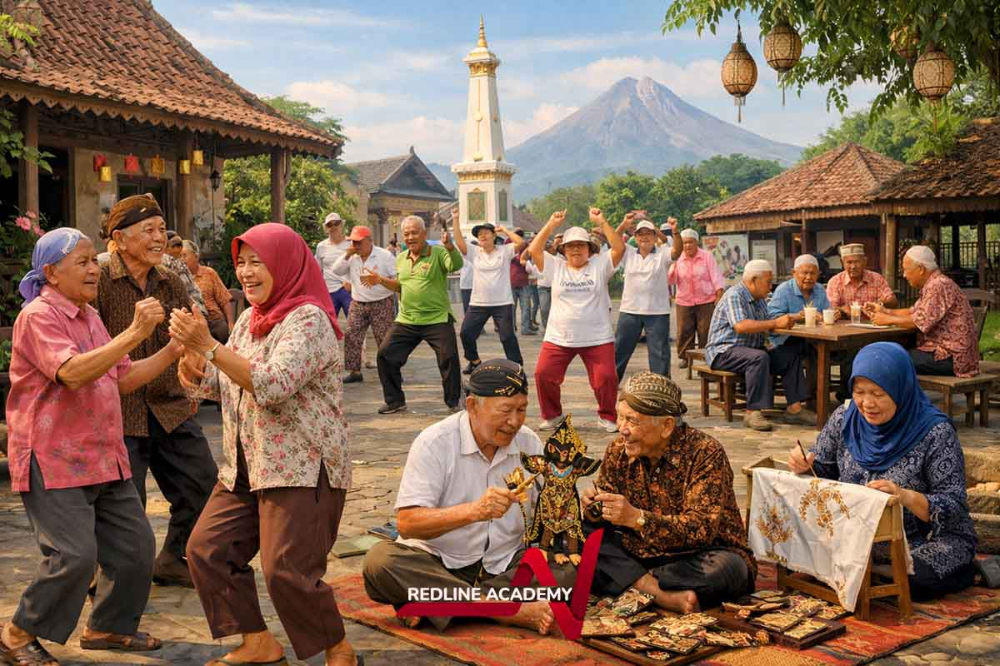
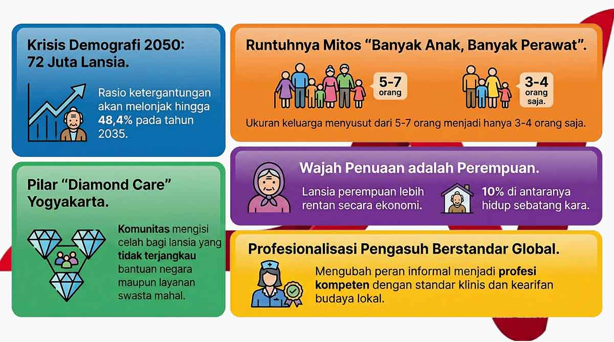
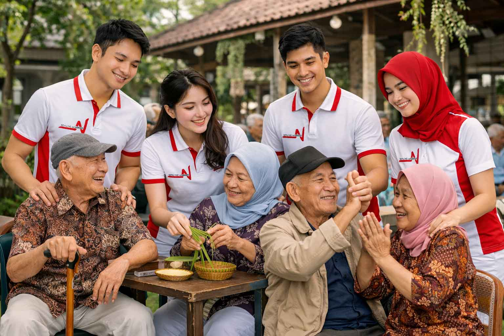

Menyongsong Senja di Tanah Air: 5 Pelajaran Berharga dari Model Perawatan Lansia Berbasis Komunitas di Yogyakarta
Yogyakarta memberi Indonesia pelajaran penting: masa depan perawatan lansia tidak bisa hanya ditopang keluarga, tetapi perlu dibangun sebagai gerakan komunitas yang bermartabat.


Mengapa Yogyakarta penting untuk dibaca sekarang?
Indonesia sedang bergerak menuju fase demografi yang jauh lebih tua. Saat populasi lansia meningkat dan ukuran keluarga menyusut, model perawatan tidak lagi bisa hanya mengandalkan rumah tangga inti. Yogyakarta, dengan proporsi lansia tertinggi di Indonesia, memberi kita contoh nyata tentang bagaimana komunitas dapat menjadi infrastruktur sosial yang menjaga martabat warga senior.
1. Mitos “banyak anak, banyak perawat†sedang runtuh
Selama bertahun-tahun, kita percaya bahwa anak adalah jaminan hari tua. Namun, realitas sosial Indonesia sudah berubah. Angka kelahiran menurun, keluarga inti menyusut, dan mobilitas ke kota besar membuat dukungan domestik semakin tipis.
Implikasinya besar: semakin banyak lansia hidup sendiri atau hanya bersama pasangan, sementara kapasitas keluarga untuk memberi perawatan harian terus menurun. Kekosongan ini tidak bisa ditutup dengan nostalgia. Ia membutuhkan sistem dukungan baru yang lebih realistis.

2. Wajah penuaan adalah perempuan
Penuaan di Indonesia tidak netral gender. Lansia perempuan hidup lebih lama, tetapi sering lebih rapuh secara ekonomi. Mereka lebih sering hidup sendiri, lebih rentan kehilangan dukungan finansial pasangan, dan lebih sedikit tetap aktif bekerja di usia lanjut.
Karena itu, kebijakan dan layanan care yang serius harus peka gender. Tanpa sensitivitas ini, perawatan lansia berisiko mengabaikan lapisan kerentanan yang justru paling dalam dirasakan perempuan.
Model perawatan yang baik bukan hanya menjawab siapa yang merawat, tetapi juga bagaimana martabat, akses, dan keberlanjutan dijaga secara bersama.
Di titik inilah komunitas menjadi lebih dari sekadar lingkungan sosial; ia berubah menjadi sistem penyangga.
3. Community care adalah pengisi celah yang paling masuk akal
Negara memiliki keterbatasan fiskal. Sektor swasta sering terlalu mahal. Keluarga semakin tidak selalu tersedia. Dalam celah di antara tiga pilar itulah komunitas tampil sebagai penyeimbang yang paling penting.
Model perawatan berbasis komunitas bekerja karena ia tetap terasa akrab secara budaya, lebih dekat secara geografis, dan lebih ringan secara biaya. Ia menjadi jawaban yang tidak hanya efektif, tetapi juga bisa diterima oleh masyarakat luas.
4. Kader adalah ujung tombak care yang sesungguhnya
Keberhasilan Yogyakarta tidak bertumpu pada teknologi mahal, melainkan pada kehadiran kader dan pemimpin lokal yang dipercaya warga. Mereka memberi perhatian, menemani, memantau kesehatan, dan melakukan hal-hal kecil yang justru paling berarti bagi lansia.
Perawatan yang mereka hadirkan melampaui tindakan medis. Ia menyentuh kesepian, rasa aman, dan kebutuhan untuk tetap dihargai sebagai manusia.
5. Active aging adalah investasi, bukan beban
Lansia yang sehat bukan hanya penerima bantuan. Mereka tetap bisa berkontribusi secara sosial dan ekonomi jika kesehatan, akses, dan dukungan komunitasnya dijaga.
Karena itu, perawatan lansia seharusnya tidak dilihat sebagai biaya semata. Ia adalah investasi agar masa tua tetap produktif, bermartabat, dan terhubung dengan masyarakat.
Visi Redline: membangun infrastruktur manusia untuk masa depan care
Pelajaran dari Yogyakarta menunjukkan bahwa caregiver masa depan harus mampu bekerja dengan standar profesional sekaligus peka terhadap nilai budaya lokal. Di sinilah visi Redline Academy menjadi relevan.
- Kami memprofesionalkan sektor care yang selama ini sering dianggap informal.
- Kami menjembatani ketelitian klinis dengan kebijaksanaan budaya Indonesia.
- Kami menyiapkan caregiver yang mampu bekerja langsung di rumah dan komunitas, bukan hanya di institusi formal.
- Kami menekankan critical thinking agar caregiver siap menghadapi situasi nyata yang kompleks.
Refleksi akhir
Kualitas sebuah bangsa pada akhirnya terlihat dari cara ia memperlakukan warga seniornya. Jika keluarga tidak lagi bisa memikul semuanya sendiri, maka komunitas, kebijakan, dan pendidikan caregiver harus bergerak bersama.
Pertanyaan besarnya bukan lagi apakah kita membutuhkan sistem perawatan baru, tetapi apakah kita siap membangunnya sebelum generasi kita sendiri memasuki usia senja.
Keyword cluster dan internal linking
Artikel ini mengisi cluster perawatan lansia berbasis komunitas dan menghubungkan topik aging Indonesia dengan pelatihan caregiver, paradigma care, dan materi audio tentang martabat dalam perawatan.
Pertanyaan yang Sering Diajukan
Apakah sertifikat ini langsung bisa saya pakai di Indonesia?
Ya. Sertifikat ini bisa langsung dipakai untuk konteks lokal seperti perawatan keluarga, pendampingan lansia di rumah, dan membangun rekam jejak awal saat Anda mulai mengambil peran care di Indonesia.
Bisa merawat anggota keluarga sendiri dengan sertifikat ini?
Bisa. Ini justru tahap pertama yang paling nyata. Pembelajaran yang Anda dapatkan bisa langsung diterapkan untuk merawat orang tua, pasangan, atau anggota keluarga lain dengan cara yang lebih aman, terstruktur, dan bermartabat.
Rumah sakit atau panti jompo mana yang menerima sertifikat ini?
Penerimaan selalu bergantung pada kebutuhan dan kebijakan masing-masing pemberi kerja. Secara umum, sertifikat ini paling relevan untuk pemberi layanan home care, panti wreda, komunitas lansia, layanan pendampingan, dan organisasi care lokal yang menilai kesiapan praktik dan sikap profesional.
Berapa lama pengalaman lokal yang saya butuhkan sebelum melamar ke luar negeri?
Tidak ada satu angka yang berlaku untuk semua negara atau jalur. Namun, secara jujur, rekam jejak lokal yang konsisten biasanya membuat aplikasi jauh lebih kuat. Fokus utamanya adalah membangun pengalaman nyata, referensi kerja, dan bukti praktik yang rapi sebelum mengejar peluang global.
Apakah saya wajib ke luar negeri setelah lulus?
Tidak. Opsi global adalah pilihan, bukan kewajiban. Anda bisa memakai sertifikat ini untuk mulai dari rumah, tumbuh di pasar kerja lokal, lalu membuka peluang internasional ketika benar-benar siap.
Bagaimana jika saya perlu membatalkan pendaftaran?
Kebijakan pembatalan dan pengembalian dana mengikuti ketentuan pendaftaran yang berlaku pada saat Anda mendaftar. Jika ada perubahan rencana, sebaiknya hubungi tim Redline Academy secepat mungkin agar opsi yang tersedia bisa dijelaskan dengan jelas.
Why does Yogyakarta matter right now?
Indonesia is entering a much older demographic era. As the elderly population grows and household size continues to shrink, care can no longer depend on the nuclear family alone. Yogyakarta, with the country's highest share of older adults, offers a living example of how communities can become the social infrastructure that protects senior dignity.
1. The myth of “many children, many carers†is collapsing
For generations, children were imagined as the safety net of old age. But Indonesia's social reality has shifted. Fertility has fallen, family size has narrowed, and migration to major cities has weakened the domestic care structure.
The implication is stark: more older adults are living alone or only with a spouse, while families have less capacity to provide daily care. This gap cannot be closed with nostalgia. It requires a new support system that is realistic and durable.

2. Aging in Indonesia has a female face
Aging is not gender-neutral. Older women live longer, but they are often more economically vulnerable. They are more likely to live alone, more likely to lose spousal financial support, and less likely to remain economically active in later life.
That is why serious care policy must also be gender-sensitive. Without that lens, elderly care risks overlooking the very layer of vulnerability that older women carry most heavily.
A strong care model does not only answer who provides care, but how dignity, access, and sustainability are protected together.
This is where the community becomes more than a social environment; it becomes a support system.
3. Community care is the most realistic bridge
The state has fiscal limits. Private services are often too expensive. Families are not always available. In the gap between those three pillars, the community emerges as the most important balancing force.
Community-based care works because it remains culturally familiar, geographically close, and financially lighter. It is not only effective; it is socially acceptable.
4. Cadres are the true spearhead of care
Yogyakarta's success does not rest on expensive technology, but on local leaders and cadres who are trusted by residents. They visit, accompany, monitor, listen, and do the small acts that matter most to older adults.
The care they provide goes beyond medical tasks. It responds to loneliness, safety, and the fundamental need to remain recognized as a person.
5. Active aging is an investment, not a burden
Healthy seniors are not merely care recipients. They can still contribute socially and economically when their health, access, and community support are protected.
Elder care should therefore be seen not as a cost alone, but as an investment in a later life that remains productive, dignified, and connected.
The Redline vision: building human infrastructure for the future of care
The lesson from Yogyakarta is clear: future caregivers must combine professional standards with cultural intelligence. That is exactly where Redline Academy positions its work.
- We professionalize a care sector that is still often treated as informal.
- We bridge clinical rigor with Indonesian cultural wisdom.
- We prepare caregivers to work directly in homes and communities, not only in formal institutions.
- We emphasize critical thinking so caregivers can handle complex real-world situations.
Final reflection
The quality of a nation is ultimately revealed by how it treats its senior citizens. If families can no longer carry everything alone, then communities, policy, and caregiver education must move together.
The real question is no longer whether we need a new care system, but whether we are willing to build it before our own generation reaches old age.
Keyword cluster and internal linking
This article supports the community-based elderly care cluster and connects Indonesia's aging discussion with caregiver training, care philosophy, and audio learning on dignity in care.
Frequently Asked Questions
Can I use this certificate in Indonesia right away?
Yes. This certificate can be used immediately in local contexts such as family care, home-based elderly support, and building an early track record as you begin taking on care roles in Indonesia.
Can I use this certificate to care for my own family member?
Yes. This is often the most immediate first stage. What you learn can be applied directly to supporting parents, a spouse, or other family members in a safer, more structured, and more dignified way.
Which hospitals or elderly care homes accept this certificate?
Acceptance always depends on each employer's needs and policies. In general, this certificate is most relevant for home care providers, elderly care homes, senior community services, companion care services, and local care organisations that value practical readiness and professional attitude.
How much local experience do I usually need before applying overseas?
There is no single number that applies to every country or pathway. But honestly, a consistent local track record usually makes an overseas application much stronger. The main priority is building real experience, work references, and clear evidence of practice before pursuing global opportunities.
Am I required to go overseas after graduating?
No. The global option is a choice, not a requirement. You can use this certificate to start at home, grow in the local job market, and open international opportunities when you are truly ready.
What if I need to cancel my enrolment?
Cancellation and refund policy follow the enrolment terms that apply when you register. If your plans change, it is best to contact the Redline Academy team as early as possible so the available options can be explained clearly.
Siap memulai perjalananmu sebagai caregiver profesional?
Rawat keluarga hari ini. Bangun karir lokal dengan credential yang diakui. Buka pintu global ketika kamu siap - dengan sertifikat yang sama. Mulai dari Rp 500rb/bulan.